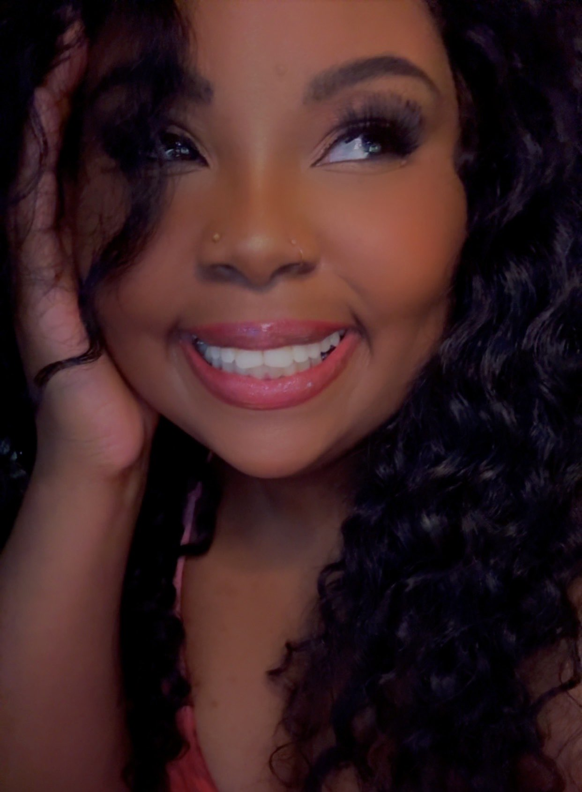

Elden Ring
Elden Ring
Gameplay systems validation, boss-state reproduction, traversal review, and defect analysis supporting quality assurance for a high-complexity AAA environment.
Senior QA professional with 9+ years of experience validating PC, console, mobile, AR, and connected-device applications across game development and live-service environments. I specialize in gameplay systems validation, regression coverage, compatibility testing, and converting complex defects into actionable engineering insight.

Gameplay systems validation, boss-state reproduction, traversal review, and defect analysis supporting quality assurance for a high-complexity AAA environment.
Progression testing, settings-persistence validation, and gameplay stability review across MyCareer and cross-platform execution paths.
Environmental QA review, lighting validation, encounter-state analysis, and defect documentation focused on overall player experience and confidence in release readiness.